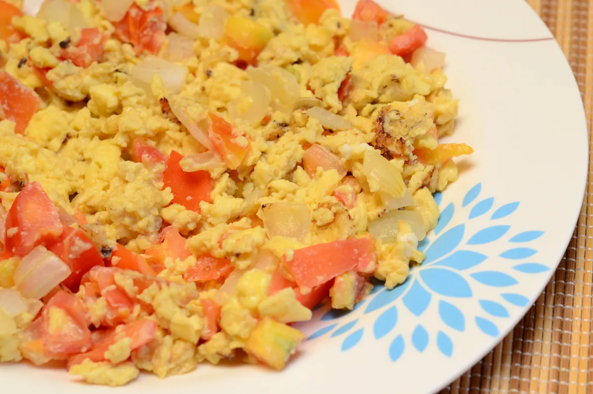

Scrambled Eggs Recipe

Description
It is important to get good protein in the morning after waking up. It will set your rhythm for the rest of the day.
What better way of (efficiently) doing it than by cooking yourself some tasty scrambled eggs?
Ingredients
- Two eggs
- Tomato
- Onion
- Butter
- Condiments
Steps
- Put butter on the pan and let it melt
- Chop tomato and onion to desired size and quantity
- Put eggs in the pan along with the tomato and the onion pieces
- Mix it ull up and add condiments
- Let it cook for a few minutes. Mix it constantly so you don't end up with an omelette!
Conquer the day!